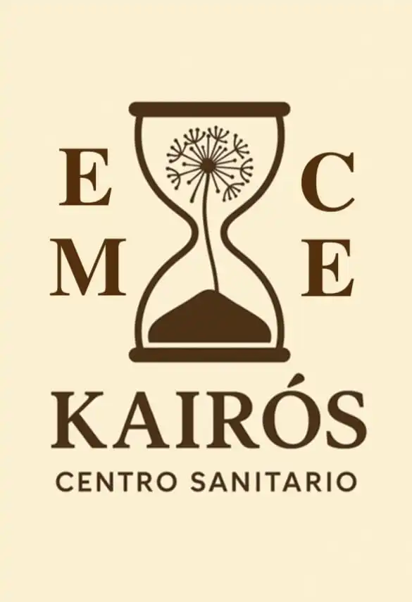

Torrejón de Ardoz · Corredor del Henares
Fisioterapia a domicilio para volver a moverte con confianza.
Soy Marcos Blázquez y te ayudo a reducir dolor, recuperar movilidad y mejorar tu rendimiento con fisioterapia manual, deportiva y ejercicio terapéutico.
Mi lema
Cuídate y vive sin dolor.

Atención
Individualizada y basada en valoración.
Cobertura
Torrejón, Corredor del Henares y zonas cercanas.
Objetivo
Mejor calidad de vida, menos dolor y mejor rendimiento.
Conóceme
Una fisioterapia cercana, precisa y pensada para tu día a día.
Desde siempre me han apasionado el deporte y la salud, y por eso he enfocado mi profesión en ayudarte a conseguir una mejor calidad de vida sin dolor.
Mi objetivo es ofrecerte una atención individualizada, basada en una buena valoración, un tratamiento eficaz y un seguimiento continuo adaptado a tus necesidades.
Si quieres prevenir o recuperarte de una lesión, además de mejorar tu rendimiento, estaré encantado de ayudarte.

2021-2022
Triana Club de Fútbol

2023-actualidad
A.D. Naya

Torrejón de Ardoz
Encadénate S.L.
Servicio propio
Fisioterapia a domicilio +3 años
Tratamientos
Técnicas útiles de verdad, explicadas con claridad.
Patologías
Algunas de las dolencias que trato con frecuencia.

Dolor de espalda

Disfunciones mandibulares (ATM)

Dolor de hombro

Lesiones deportivas

Patologías geriátricas
Tarifas
Precios claros, sesiones de aproximadamente una hora y opciones de bono.
Los precios pueden variar ligeramente según la zona, el número de personas o el tipo de seguimiento.
Zonas distintas a Torrejón de Ardoz o al Corredor del Henares, como Alcalá de Henares, San Fernando, Coslada, Loeches, Mejorada del Campo o Meco, se valoran sin compromiso.
Torrejón de Ardoz
- Individual: 45 €/sesión
- Bono 5 sesiones: 210 € (42 €/sesión)
- Bono 10 sesiones: 400 € (40 €/sesión)
Corredor del Henares
- Individual: 50 €/sesión
- Bono 5 sesiones: 235 € (47 €/sesión)
- Bono 10 sesiones: 450 € (45 €/sesión)
Colaboraciones
- Individual: 35 €/sesión
- Precio especial para miembros de A.D. Naya y Club Sinabro.

Kairós EMCE
- Individual: 45 €/sesión
- Bono 5 sesiones: 210 € (42 €/sesión)
- Bono 10 sesiones: 400 € (40 €/sesión)

Escritorios 3 · Esc. Izqda 1 Izqda · Alcalá de Henares
El importe del bono se abona en su totalidad.
Los bonos tienen una duración de 1 año desde la fecha de compra.
Duración aproximada de la sesión: 1 hora.
Reseñas
Así hablan de mi trabajo quienes ya han confiado en mí.
Valoración de 5 de 5 estrellas
Marcos es un profesional de 10, me ayudó a superar una lesión deportiva que me limitaba muchísimo y ahora me trata la sobrecarga muscular derivada de mi práctica deportiva de forma periódica. Cada vez que me atiende salgo como nuevo y aparte es muy cercano, profesional y cordial. Totalmente recomendable.
ChrisValoración de 5 de 5 estrellas
Fenomenal, me trató durante varias sesiones y genial desde la primera. Recomendable 100%.
Juani Donoso CubilloContacto
Cuéntame tu caso y vemos cómo puedo ayudarte.
Si quieres más información sobre los tratamientos o necesitas orientación para mejorar tu calidad de vida, escríbeme. Estaré encantado de atenderte.